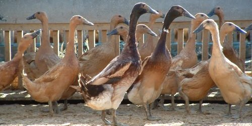
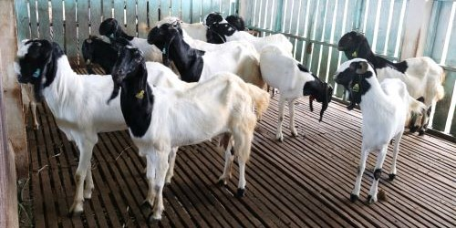

--- PRODUK ---
Komoditas Produk Unggulan Kami
Kami menyediakan komoditas produk peternakan antara lain : bibit ternak itik alabio, bibit ternak itik mojosari, bibit ternak itik PMP, bibit ternak kambing Peranakan Etawa (PE), bibit ternak Sapi Madura dengan kualitas unggul.
--- ITIK ALABIO ---

- Itik Alabio merupakan itik asli Kalimantan Selatan keturunan dari itik mallard berasal dari Desa Marmar Kec. Amuntai Selatan, Kab. Hulu Sungai Utara (HSU)
--- ITIK MOJOSARI ---
- Itik mojosari berasal dari desa Modopuro, Kec.Mojosari, Kab. Mojokerto, Jawa Timur merupakan itik lokal petelur unggul yang banyak digemari konsumen.
--- ITIK PMP ---

- Itik PMP merupakan persilangan itik peking dan itik mojosari putih untuk menyediakan permintaan konsumen akan rumpun itik pedaging dengan bobot badan dan tingkat pertumbuhan yang tinggi.
--- KAMBING PE ---
- Kambing Peranakan Ettawa berasal dari Kecamatan Kaligesing, disekitar kawasan perbukitan Menoreh, Purworejo - Jawa Tengah.
--- SAPI MADURA ---

- Sapi Madura adalah bangsa sapi potong lokal asli Indonesia yang terbentuk dari persilangan antara banteng dengan Bos indicus atau sapi Zebu
--- HIJAUAN PAKAN TERNAK ---

- Hijauan Pakan Ternak adalah hijauan atau rumput-rumputan yang memiliki angka kecukupan gizi yang tepat untuk ternak ruminansia, tidak semua rumput dapat dikategorikan hijauan makanan ternak.